Bring your claude.ai history across.
Import copies your claude.ai conversations and projects into the Claude Desktop app that already talks to brewkeg, plus any Cowork and Claude Code sessions sitting on this machine. Everything lands in the local session store, so you pick up work you started on claude.ai and every new reply is answered — and billed — by brewkeg.
An import is a one-time copy, not a connection. Nothing you write on claude.ai afterwards shows up unless you run it again, and running it again will not duplicate what is already there.
← Claude Desktop setup01Before you start.
Import is already switched on for you. brewkeg setup and the Gateway app both write this into the managed profile on install:
- Import… lives in Settings → Import & export. If it is missing, run
brewkeg setupagain and fully quit the app (Cmd+Q on macOS, not the red window button). - No background copy.
automatic3pImportstays off on purpose: copying a person’s older local sessions without asking is their call, not ours. Old sessions are still here — bring them in through Step 2 of the wizard. - Claude Desktop must already be in its brewkeg configuration. If you have not done that yet, start with the setup guide.
- On a claude.ai Team or Enterprise workspace, an owner has to turn on Allow members to export their own data under Organization settings → Data and privacy. Personal claude.ai accounts can always export. HIPAA-ready organizations cannot turn it on at all.
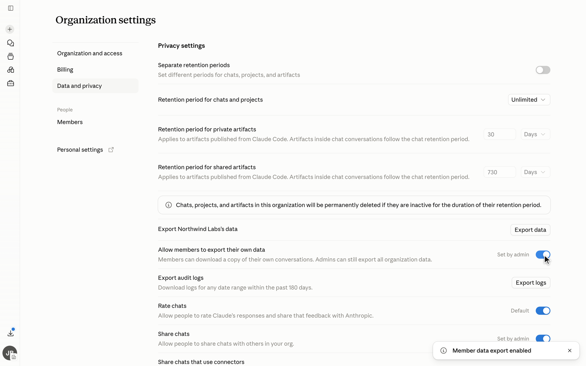
02Open the wizard.
In Claude Desktop go to Settings → Import & export and click Import…. Three steps follow — Chats, Cowork & Code, Review — and you can skip any of them you do not need. A fourth, Duplicates, only appears after the import, when a project name collides with one you already have.
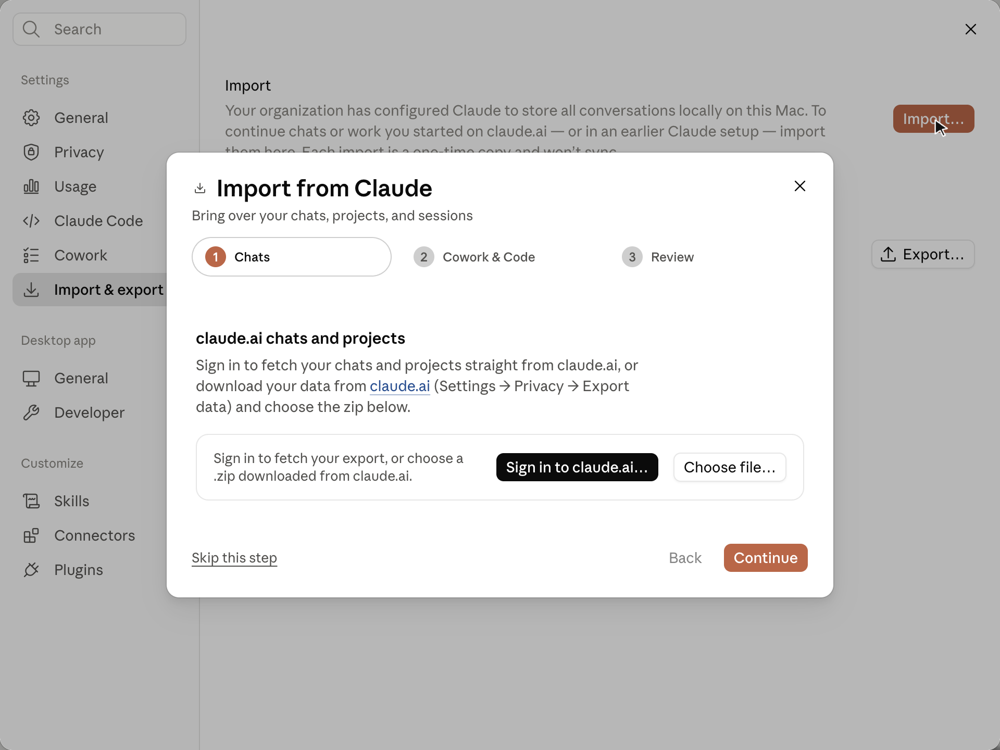
03Step 1 · claude.ai chats and projects.
Two ways in, and both end at the same place. Signing in is fewer clicks; the file works when the browser flow is not an option.
Sign in to claude.ai
Click Sign in to claude.ai…. Your browser opens, you sign in if needed, pick the organization if you belong to more than one, and hit Authorize. The only thing granted is a one-time export of your own data. Back in the app, click Fetch export and the wizard downloads it and shows what it found.
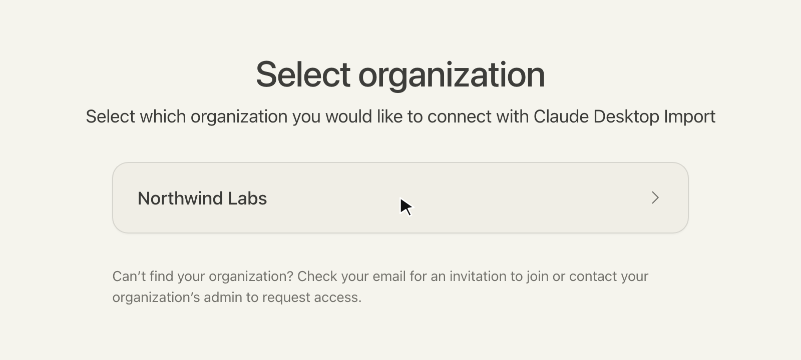
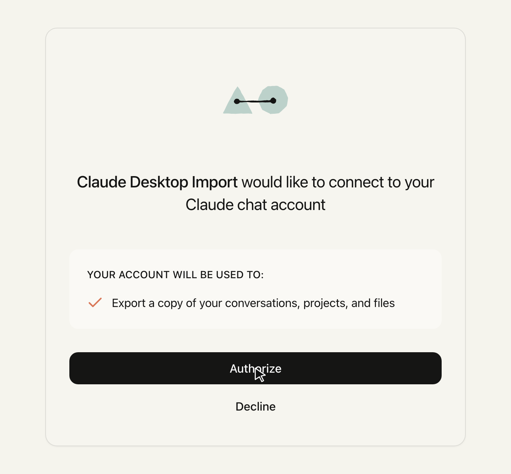
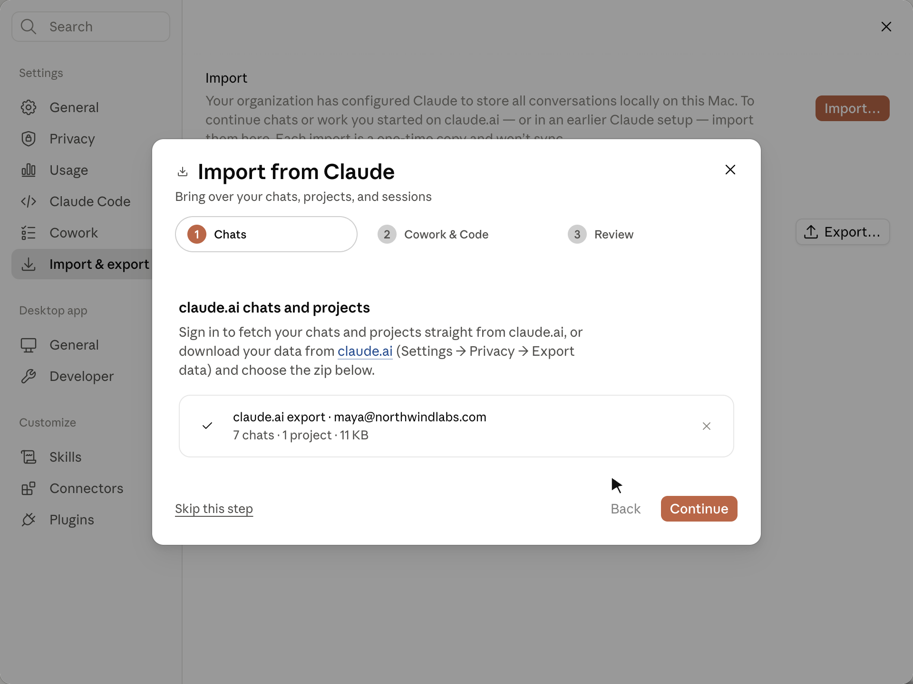
…or choose a downloaded file
On claude.ai, open Settings → Privacy → Export data and click Export. If there is no Export data page, ask a workspace owner to enable member export. claude.ai emails you a download link — it expires after 24 hours. Download the zip, then in the wizard click Choose file… and pick it.
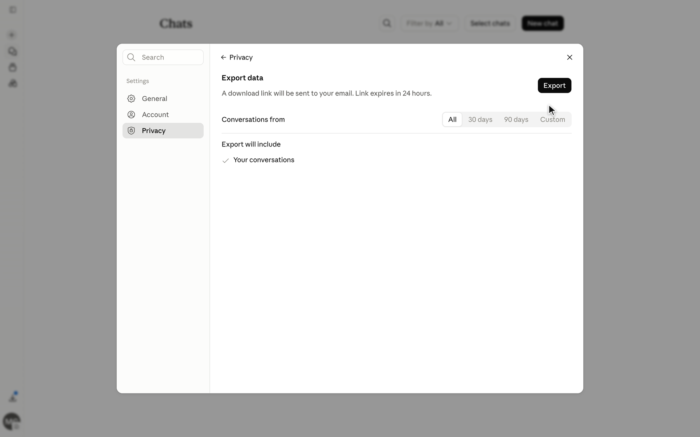
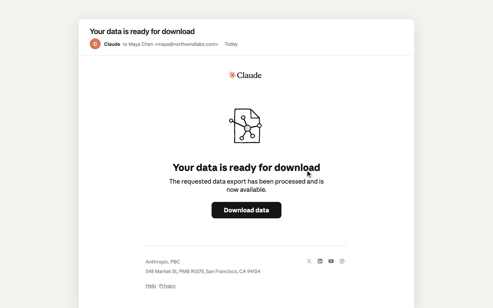
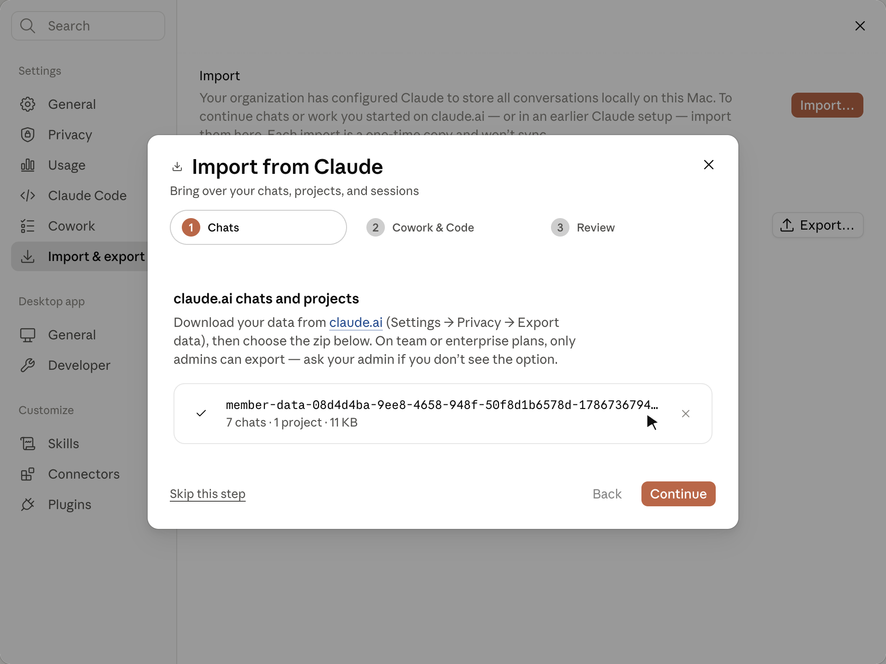
Click Continue, or Skip this step if you only want the sessions already on this machine.
04Step 2 · Local Cowork and Code sessions.
The wizard scans this computer for Cowork and Claude Code sessions left by an earlier Claude Desktop configuration and lists them. Pick how far back to go, and add any other folder that holds sessions — a backup, or a folder copied off another machine.
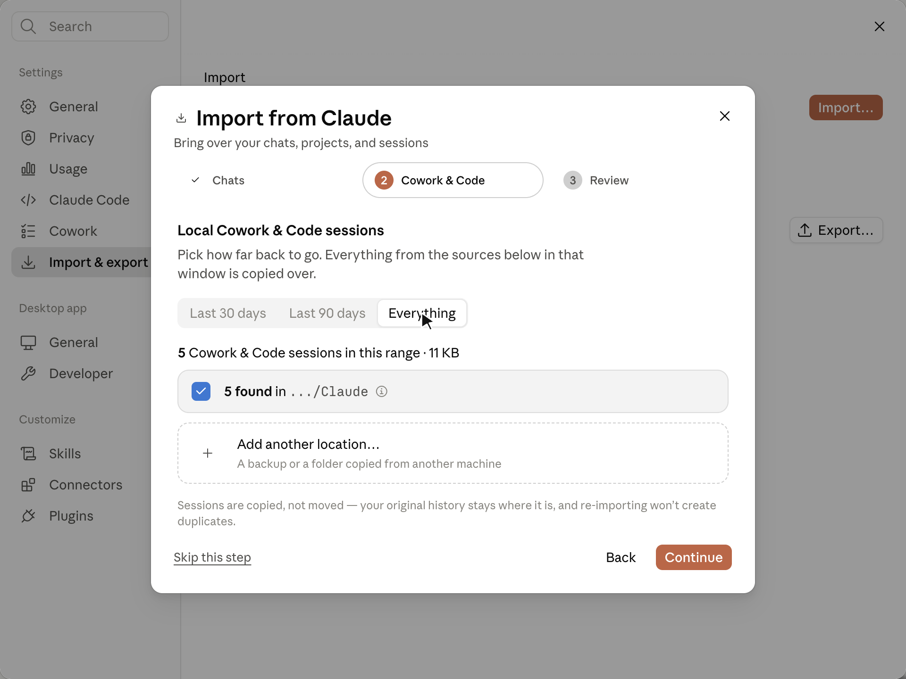
Sessions are copied, never moved. Your original history stays exactly where it is.
05Step 3 · Review and import.
The review step adds up what is about to land. Click Import and it all goes into your local session store. Imported chats show up in the sidebar; imported projects show up on the Projects page.
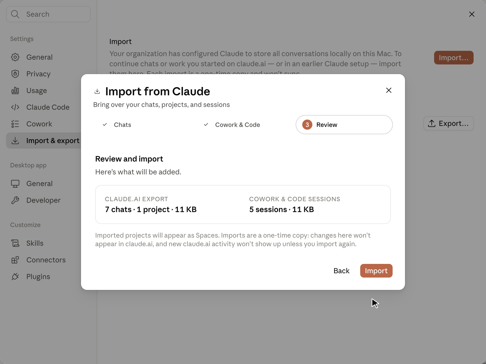
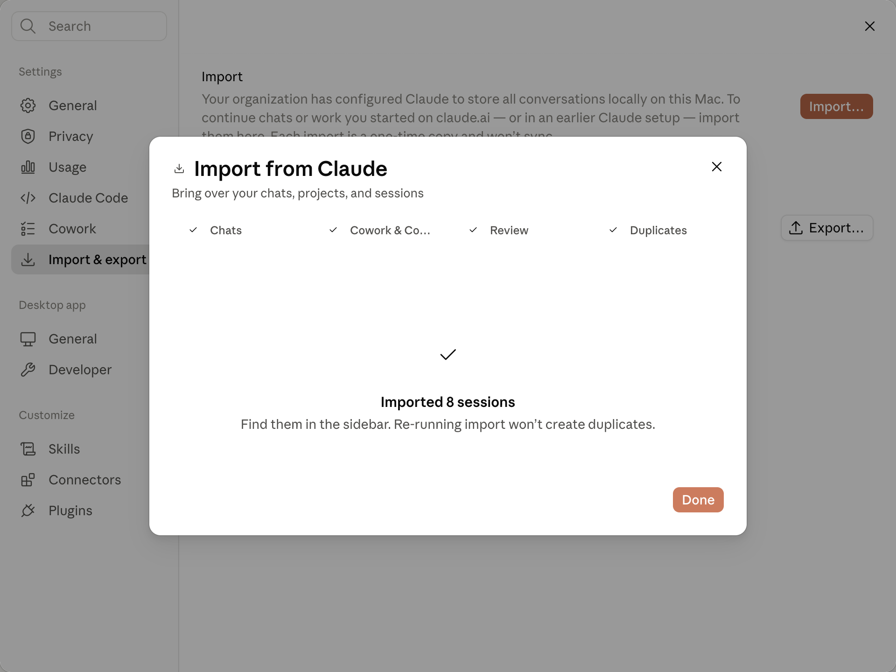
06Duplicate projects.
When an imported project shares a name with one you already have, a Duplicates step appears after the import. Each match gets two choices:
- Merge into existing — the imported chats and sessions move into the project you already have, and the duplicate goes away. Attached folders move with them. If your existing project had no instructions of its own, the imported ones are shown for you to review and accept. Later imports from the same source land here too.
- Keep separate — both stay. The imported one keeps a numbered name such as Northwind (1), and the app stops offering to merge it.
Missed the step — signed in and the history arrived without a wizard, or closed it early? The same two buttons sit under the duplicate project’s card on the Projects page, and at the top of the project itself.
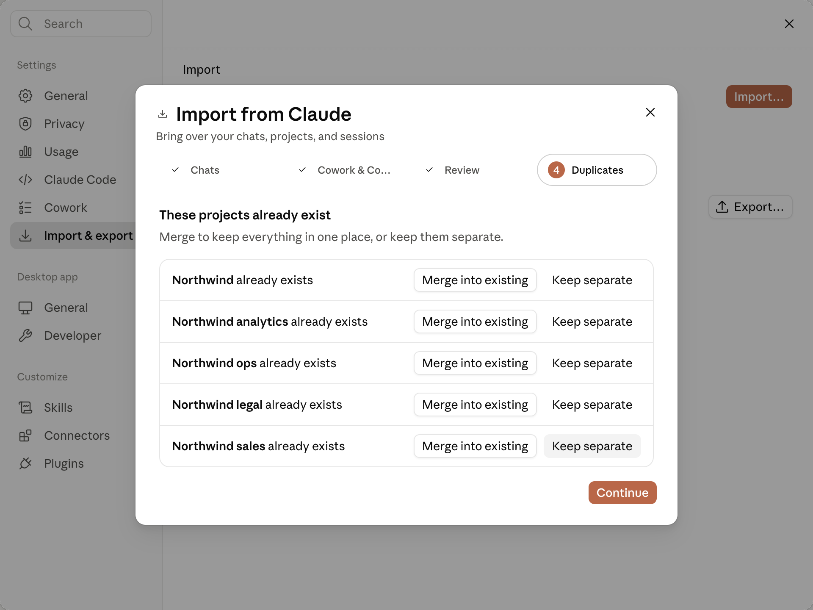
07Continue an imported chat.
Open any imported conversation from the sidebar and keep typing. The first message in an imported session asks you to confirm before it continues — then the reply comes from brewkeg, billed to your brewkeg credit, not from claude.ai.
- A session from this app’s own earlier configuration shows Continue this conversation? — click Continue.
- Anything else imported shows Resume imported session? — click Trust and resume.
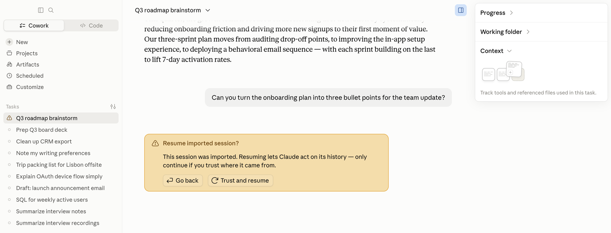
08Make an imported project folder readable.
An import puts a folder on each project it brings over. In Chat, Claude cannot read that folder until you add it again. One pass per imported project:
- Go to Projects and open the imported project.
- Next to Context click + and choose Choose a folder. Under Recent the project’s folder is dimmed and cannot be picked — note the path shown under its name.
- Select Choose a different folder, navigate to that path, and pick the folder.
- Start a new conversation in the project. Claude can now read the files in it.
Importing again does not fix this on its own. Remove the import under Settings → Import & export → Import history (or archive the project), re-import, and add the folder again — the new project uses the same folder.
09What comes over — and what does not.
- Your data only. Your own conversations, projects, and memory. Nobody else on the workspace gets included.
- Chats and projects arrive. Project instructions are shown for you to accept before they apply. Folders need the step above before Chat can read them.
- Artifacts become files. The final version of each artifact and file Claude created is saved as an output file on the imported conversation. Earlier versions are not kept, and very large ones are cut off with a note saying so.
- Attachments do not. Project knowledge files and conversation attachments are excluded from a personal export — on either route — as a claude.ai security policy. The messages that referenced them come through; the files themselves do not. Only an owner-run organization-wide export includes file contents.
- One-time copy. Nothing stays in sync with claude.ai. Re-run the import for newer chats; existing ones are matched and skipped.
- Download links expire. The emailed claude.ai link lasts 24 hours. Ask for a fresh export if it lapses.
Moving to another computer
With exportEnabled on — which brewkeg sets — Settings → Import & export also has Export…. That writes this machine’s chats, Cowork tasks, and Code sessions (not terminal Claude Code sessions) to a zip. On the other machine, open the wizard and pick the zip with Choose file…; its sessions appear in the Cowork & Code step. It is a snapshot, not a sync, and the zip holds full conversation text — treat it as sensitive.
The zip carries sessions, project names, and each session’s output files up to 100 MB. It leaves out project instructions, memory, scheduled tasks, skills, plugins, and attached files — move those by copying the application-data folder instead.
Related reading
- Installation and setup — Claude Desktop in a brewkeg-shaped configuration
- Configuration reference — every key, including
claudeAiImportand session retention - Where chats live on disk — the local session store, memory, and how to move a user to a new device
- Feature matrix — what works on a third-party connection and what does not
- Models — how the picker decides what to offer
Ours instead: connecting Claude Desktop to brewkeg, and every other agent.